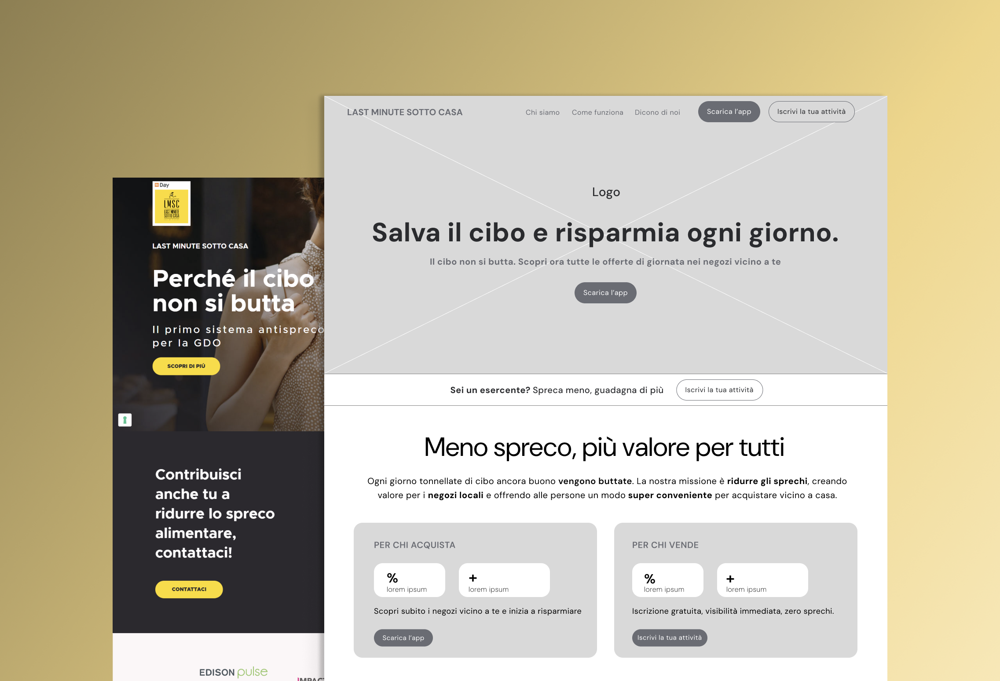
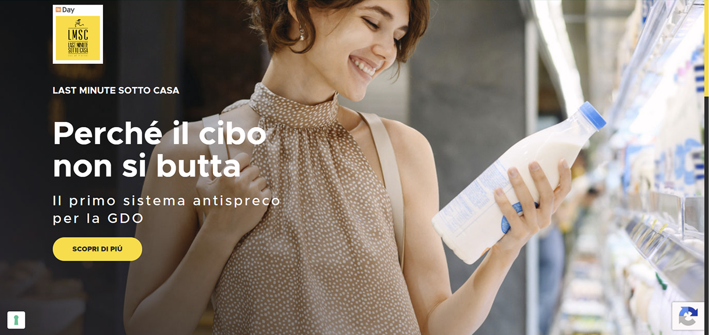
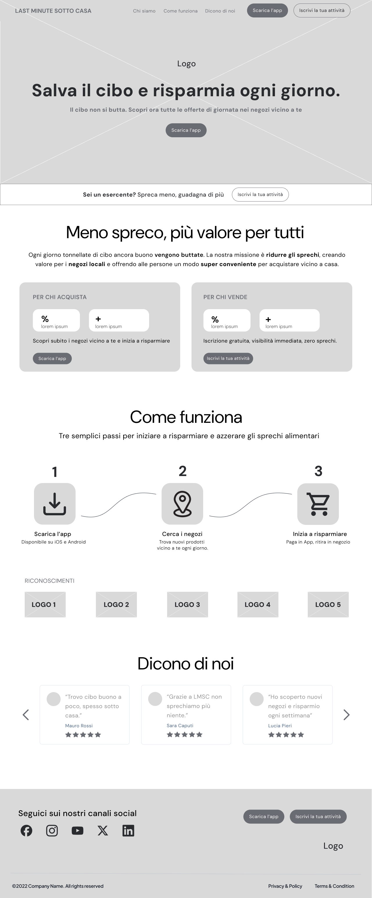

Contesto
Una piattaforma digitale che aiuta i negozi a ridurre gli sprechi alimentari e permette ai consumatori di acquistare prodotti scontati nelle attività vicine.
UX Design · Wireframing · 2026
Ripensare la landing page per raccontare in modo più chiaro e coinvolgente un servizio che unisce risparmio, sostenibilità e lotta allo spreco.

01 · Overview
Last Minute Sotto Casa mette in contatto negozi alimentari e consumatori per recuperare prodotti invenduti attraverso offerte last minute. Il redesign nasce dall’esigenza di rendere più comprensibile il servizio e valorizzarne i benefici per entrambi i target.
Una piattaforma digitale che aiuta i negozi a ridurre gli sprechi alimentari e permette ai consumatori di acquistare prodotti scontati nelle attività vicine.
La landing originale comunica soprattutto con gli esercenti, mentre il valore per il consumatore, il funzionamento del servizio e il ruolo dell’app rimangono poco visibili.
Costruire una landing one-page più chiara e narrativa, capace di spiegare il servizio, distinguere i benefici per B2C e B2B e accompagnare meglio verso l’azione.
02 · Analisi As-Is
La landing originale comunica con chiarezza la missione del progetto, ma non riesce a trasformarla in un percorso altrettanto chiaro per chi visita la pagina. L’analisi si è quindi concentrata su contenuti, gerarchia e capacità della pagina di spiegare il servizio.

Punti di forza
La riduzione dello spreco alimentare rappresenta il cuore del progetto ed emerge con chiarezza nella comunicazione.
Sostenibilità, risparmio e recupero degli invenduti rendono il servizio vicino a esigenze concrete e contemporanee.
Gli esercenti comprendono facilmente il ruolo della piattaforma e il vantaggio legato alla gestione dei prodotti invenduti.
Riconoscimenti e form di contatto contribuiscono a rafforzare la credibilità del progetto e offrono un punto di conversione.
Punti di debolezza
Il copy risulta spesso generico e istituzionale e valorizza poco benefici concreti come risparmio, riduzione dello spreco e recupero di valore.
La comunicazione è quasi interamente B2B, mentre il pubblico finale trova poco spazio nella narrazione della landing.
Mancano riferimenti chiari all’app e una spiegazione del percorso attraverso cui trovare un’offerta, acquistarla e ritirarla in negozio.
Gerarchia visiva, navigazione assente e CTA poco contestualizzate rendono la pagina una successione di contenuti più che un percorso orientato all’azione.
03 · Target
Il servizio crea valore attraverso l’incontro tra due target: i consumatori che cercano un modo conveniente per acquistare prodotti alimentari e gli esercenti che vogliono ridurre gli sprechi e recuperare valore dagli invenduti.
Persone attente al risparmio e alla sostenibilità, interessate ad acquistare prodotti alimentari di qualità a un prezzo più conveniente riducendo allo stesso tempo lo spreco alimentare.
Negozi alimentari che vogliono ridurre gli invenduti, recuperare valore dai prodotti prossimi alla scadenza e comunicare in modo concreto il proprio impegno contro lo spreco.
Proto-personas
Per rappresentare i due target ho definito due proto-personas: profili ipotetici utili a orientare le scelte progettuali, non derivati da interviste o ricerca diretta con gli utenti.
28 anni
Vive in affitto ed è attenta al risparmio, ma non vuole rinunciare alla qualità di ciò che mangia. Con l’aumento dei prezzi dei supermercati cerca soluzioni più convenienti, senza però perdere troppo tempo a confrontare offerte e prezzi. Scopre Last Minute Sotto Casa dopo aver sentito parlare dell’app da un’amica.
45 anni
Gestisce un punto vendita alimentare e deve confrontarsi con margini sempre più sotto pressione e con una crescente attenzione dei clienti verso sostenibilità e responsabilità ambientale.
04 · Wireframe
Il wireframe riorganizza la landing in un percorso più chiaro, capace di spiegare il servizio, distinguere i due target e accompagnare progressivamente verso l’azione.
Una nuova navbar introduce le sezioni principali e CTA dedicate a consumatori ed esercenti.
Headline e sub combinano le due leve principali: risparmio e sostenibilità, accompagnate dalla CTA “Scarica l’app”.
La hero dà priorità al B2C, mentre una CTA dedicata intercetta gli esercenti già tra above e below the fold.
Il claim trasforma il problema dello spreco in un beneficio concreto per entrambi i target.
Due card separano chiaramente consumatori ed esercenti, con benefici, dati e CTA specifiche per ciascun pubblico.
Il servizio viene spiegato attraverso tre step, rendendo il processo immediato anche per chi incontra la piattaforma per la prima volta.
Le icone facilitano la scansione e supportano la comprensione dei diversi passaggi.
I riconoscimenti vengono mostrati dopo la spiegazione del servizio, quando l’utente dispone già del contesto necessario per valutarne l’affidabilità.
I loghi funzionano come social proof immediata.
Le recensioni aggiungono una prova sociale più concreta ed empatica, mostrando il valore del servizio attraverso l’esperienza degli utenti.
Il footer mantiene attive le possibilità di conversione riproponendo le CTA principali anche al termine della pagina.
I link ai social offrono inoltre un punto di contatto aggiuntivo con il servizio.

05 · Considerazioni finali
Il redesign ha trasformato la landing in un’esperienza più comprensibile e coerente, capace di raccontare il valore del servizio e accompagnare meglio entrambi i target verso l’azione.
Chiarita la value proposition e reso il servizio immediatamente comprensibile.
Separati i due target, consumatori ed esercenti, con benefici e CTA dedicate.
Migliorata la gerarchia visiva e la leggibilità dei contenuti.
Introdotto un flusso narrativo più logico, dal valore del servizio fino all’azione.
Rafforzata la credibilità attraverso dati, riconoscimenti e social proof.
Esplicitato il funzionamento del servizio e il ruolo dell’app all’interno dell’esperienza.
Scrivimi per collaborazioni, opportunità o per parlare di design, prodotto e comunicazione.
Contattami ora